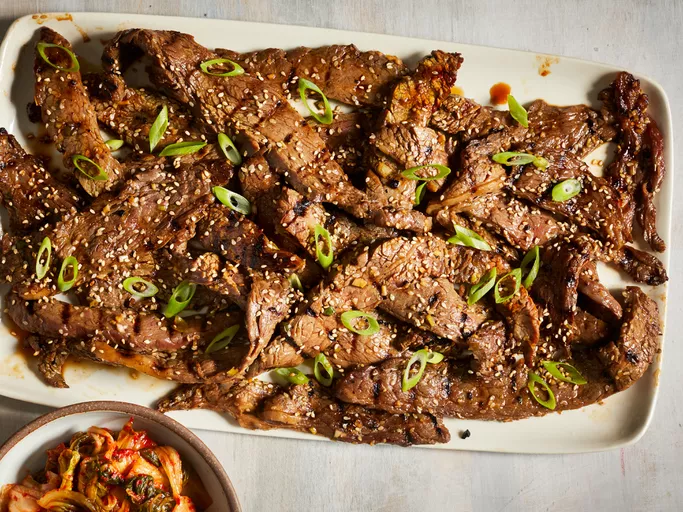

Beef Bulgogi

This restaurant-worthy beef bulgogi recipe is easy to make and impossible
to resist. A sweet and savory marinade, made with ingredients you probably
already have on hand, ensures melt-in-your-mouth bulgogi every time.
Bulgogi, or Korean barbecue, literally means "fire meat." Thin slices of
beef (or sometimes pork) are marinated in a sweet-savory sauce, then
grilled to juicy and flavorful perfection.
Ingredients
- 1 Pound of Thinly Sliced Flank Steak
- 5 Tablespoons Soy Sauce
- 2 and 1/2 of White Sugar
- 1/4 Cup of Chopped Green Onion
- 2 Tablespoons of Minced Garlic
- 2 Tablespoons of Sesame Seeds
- 2 Tablespoons of Sesame Oil
- 1/2 Teaspoon of Ground Black Pepper
Steps:
- Gather all ingredients.
- Whisk soy sauce, green onion, sugar, garlic, sesame seeds, sesame oil, and pepper together in a bowl.
- Place flank steak slices in a shallow dish. Pour marinade over top. Cover and refrigerate for at least 1 hour or overnight.
- Preheat an outdoor grill for high heat, and lightly oil the grate.
- Quickly grill flank steak slices on the preheated grill until slightly charred and cooked through, 1 to 2 minutes per side.
- Serve hot and enjoy!
Original Recipe Link:
Original Recipe Page